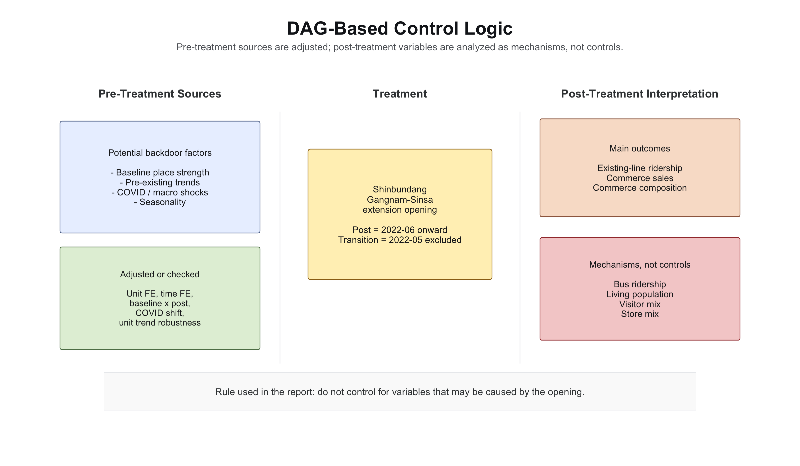
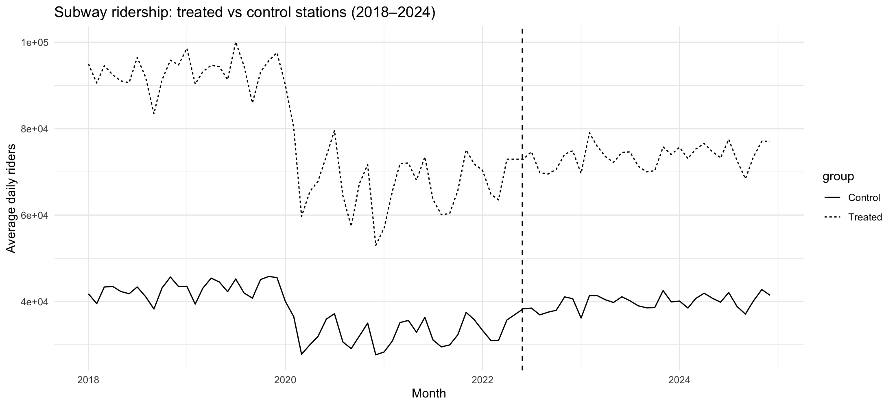
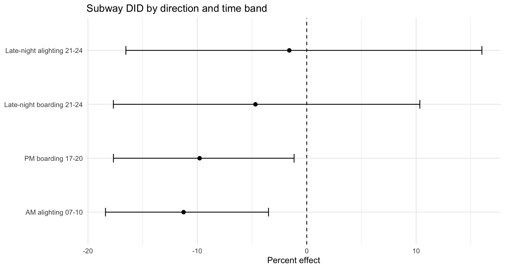
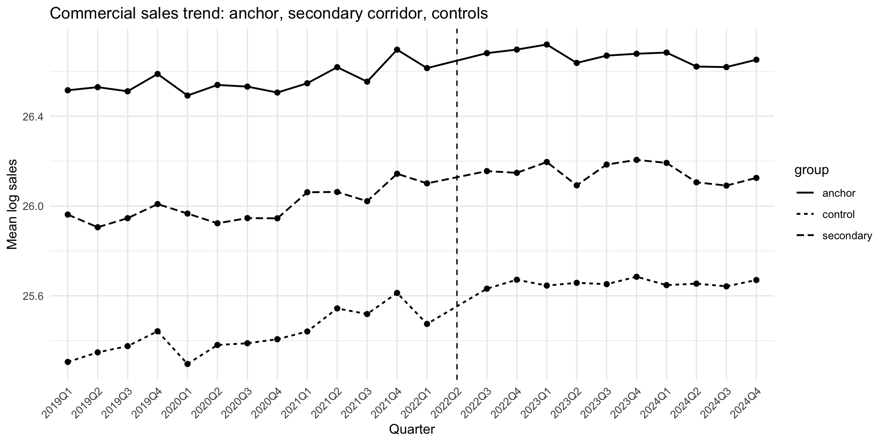
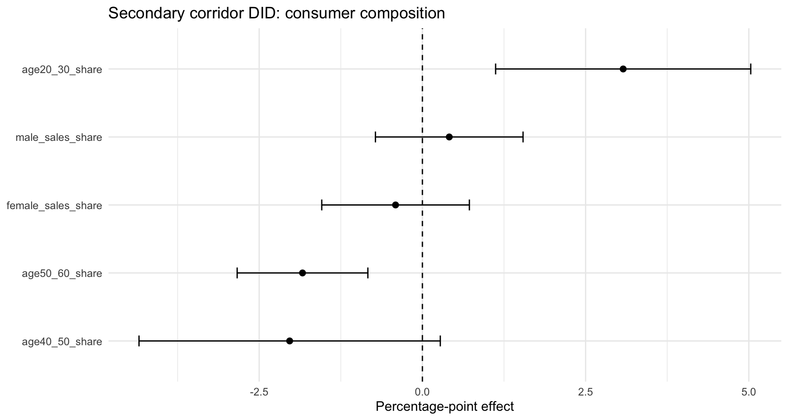
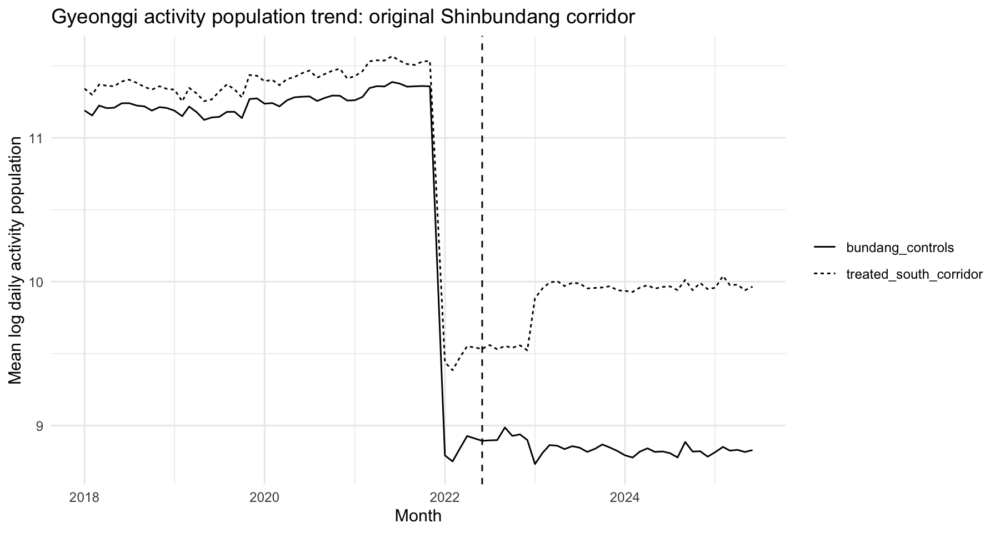

신분당선 강남–신사 연장은 강남권 내부 이동과 수도권 남부–강남 접근성을 동시에 바꾼 사건이다. 단순히 새 수요를 만들었을 수도, 기존 흐름을 재배치했을 수도 있다.
지하철 = main evidence · 상권/경기도 API = 보조·탐색적 evidence
| 자료 | 출처 | 관측 단위 | 기간 |
|---|---|---|---|
| 지하철 승하차 | 서울 공개데이터 (서울교통공사) | 역–노선 · 시간대 · 일 | 2018–24 |
| 상권 추정매출 | 서울시 상권분석 서비스 | 행정동 · 분기 연령·성별·시간대 분해 | 2019–24 |
| 버스 승하차 | 서울 공개데이터 | 정류장–노선 · 시간대 · 월 | 2019–24 |
| 생활인구 | 서울시 생활인구 | 행정동 · 시간대 · 월 | 2021–24 |
| 활동(유동)인구 | 경기도데이터드림 OpenAPI | 행정동 · 요일/시간대 · 일 | 2018–25 |
| 분석 | Treated | Control |
|---|---|---|
| 지하철 월·역–노선 | 2호선_강남, 9호선_신논현 7호선_논현, 3호선_신사 | 강남·서초·인근 비교 역–노선 21개 |
| 상권 분기·행정동 | Anchor 신사·역삼1동 Secondary 논현1·서초4동 | 강남·서초 내 local controls 14동 |
| 경기도 월·행정동 | 판교·정자·미금 축 10개 행정동 | 분당구 내 다른 행정동 |
POST지하철 2022.06~ · 상권 2022.3Q~
제외개통월(2022.05)·분기는 transition으로 drop
강남·신사처럼 원래 강한 상권을 anchor/secondary로 나눠 “강남권 전체가 좋아졌나”가 아니라 층위별 반응 차이를 본다.
단위 고정효과 + 시점 고정효과 양방향 FE. 표준오차는 역–노선/행정동 단위 군집화.
Robustness: baseline×post, treated×코로나, 단위별 선형추세, Synthetic Control

단위별 선형추세 추가 시 −8.2%로 다소 축소되나 부호 불변

| 방향 · 시간대 | 추정 효과 | p |
|---|---|---|
| 출근시간 하차 07–10시 | −11.26% | 0.007 |
| 퇴근시간 승차 17–20시 | −9.79% | 0.029 |
| 야간 승차 21–24시 | −4.69% | 0.505 |
| 야간 하차 21–24시 | −1.60% | 0.842 |
출근 하차·퇴근 승차에서 기존 노선 감소가 유의하게 뚜렷, 야간은 무의미.


| Outcome | 전체 treated |
|---|---|
| 총매출 로그 | −9.57% (.131) |
| 거래건수 로그 | −10.60% (.132) |
| 평균 결제단가 | +1.20% (.858) |
| Outcome | 효과(%p) | p |
|---|---|---|
| 20–30대 매출 비중 | +3.08 | 0.004 |
| 40–50대 매출 비중 | −2.03 | 0.080 |
| 50–60대+ 매출 비중 | −1.84 | 0.001 |
| 거래건수 | −9.06 | 0.004 |
anchor에서는 20–30대 변화 미미(+0.19%p), secondary corridor에서만 뚜렷 → 중간 corridor의 소비자 구성이 달라졌을 가능성.
여러 outcome을 본 탐색적(heterogeneity) 분석 → multiple testing 유의, main claim보다 보조 근거로.


지하철
기존 노선 이용량 감소, 특히 출근 하차·퇴근 승차에서 뚜렷 → 기존 2·3·7·9호선 통근 흐름 일부를 신규 경로가 대체
상권
총매출 증가는 불명확, 거래건수는 감소. 그러나 secondary corridor에서 20–30대 비중 증가 → 총량보다 소비 구성 변화
향후: 거리 gradient·점포 단위 위치자료, 외부 시계열(날씨·행사·임대료) 확보 시 더 직접적 통제 가능